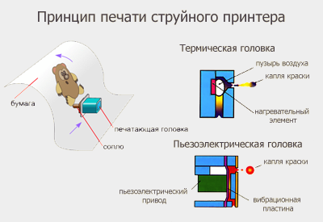

Печатающие головки струйных принтеров создаются с использованием следующих типов подачи красителя:
Непрерывная подача — формируется непрерывный поток из маленьких капель, которые заряжаются и, пролетая через электрическое поле, отклоняются в вертикальной плоскости пропорционально их заряду. Капли, которые не должны делать точку на бумаге, отклоняются в специальный желоб, по которому краска возвращается в резервуар для последующего использования.
Подача по требованию — подача красителя из сопла печатающей головки происходит тогда, когда краситель действительно надо нанести на соответствующую соплу область запечатываемой поверхности. Именно этот способ подачи красителя и получил самое широкое распространение в современных струйных принтерах.
Струйным принтерам присущи низкие уровень шума и энергопотребление, графические возможности, доступная стоимость и достаточно высокое качество печати.
Принцип струйной печати полностью вытекает из названия технологии. Чернила наносятся на бумагу микрокаплями, которые выдуваются из сопла печатающей головки. При производстве струйных принтеров, используются два способа выброса чернил: термический – чернила выдуваются за счет подачи электротока на нагревательный элемент расположенный около сопла печатающей головки, что приводит к его резкому нагреву и как следствие выбросу краски; пьезоэлектрический – выталкивание чернил производится диафрагмой пьезокристалла при подаче на него управляющего электроимпульса.
